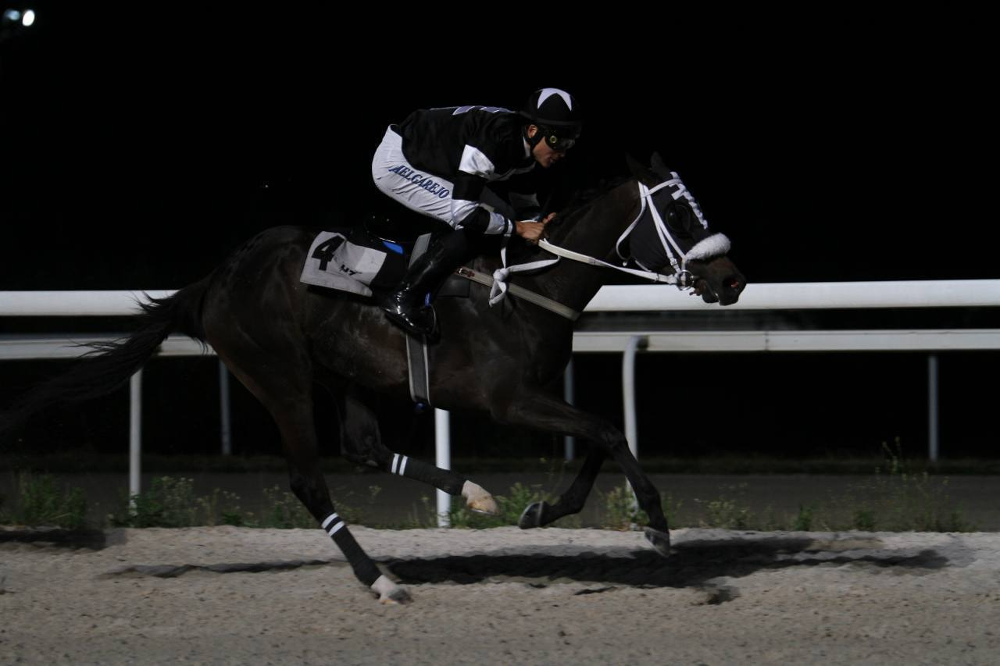

Resultados de La Zarzuela (18/06): ADRI, HOY CENO CONTIGO (FR), MI NIÑO (IRE) encabezan la jornada
La Zarzuela disputó una reunión de 5 carreras. Repasamos los resultados, con el vídeo oficial de cada prueba.

Cesión editorial (Telegram)
C1 · Premio Cría Nacional - Gonzalo Ussía (22:10 · 1.700 m)
ADRI (I.MELGAREJO) se impuso en Premio Cría Nacional - Gonzalo Ussía.
| Pos. | Caballo | Jockey | Margen |
|---|---|---|---|
| 1º | ADRI | I.MELGAREJO | — |
| 2º | EMBAJADORA | C.PEREZ | 1 1/2 C |
| 3º | CUDILLERO | V. JANACEK | CUELLO |
C2 · Premio Gonzalo De Lucas (22:45 · 1.900 m)
HOY CENO CONTIGO (FR) (R. SOUSA) se impuso en Premio Gonzalo De Lucas.
| Pos. | Caballo | Jockey | Margen |
|---|---|---|---|
| 1º | HOY CENO CONTIGO (FR) | R. SOUSA | — |
| 2º | ATENEA (GB) | J.GELABERT | 8 1/2 C |
| 3º | WOOD LAND (FR) | N. DE JULIAN | 2 3/4 C |
C3 · Premio Ming (1964) Patrocinado Por Autobello (Hándicap Dividido 2ª Parte) (23:20 · 1.200 m)
MI NIÑO (IRE) (I.MELGAREJO) se impuso en Premio Ming (1964) Patrocinado Por Autobello (Hándicap Dividido 2ª Parte).
| Pos. | Caballo | Jockey | Margen |
|---|---|---|---|
| 1º | MI NIÑO (IRE) | I.MELGAREJO | — |
| 2º | SUMMERCAKE (FR) | J.GELABERT | 3/4 C |
| 3º | SKY HAWK (GB) | V. JANACEK | 4 1/4 C |
C4 · Premio Ivanhoe (1948/1949) (Hándicap Dividido 3ª Parte) (23:55 · 1.200 m)
VILLAIRES (R.N.VALLE) se impuso en Premio Ivanhoe (1948/1949) (Hándicap Dividido 3ª Parte).
| Pos. | Caballo | Jockey | Margen |
|---|---|---|---|
| 1º | VILLAIRES | R.N.VALLE | — |
| 2º | BRISEO (FR) | I.MELGAREJO | 7 C |
| 3º | GLOOMY ROSE (FR) | V. JANACEK | CUELLO |
C5 · Premio Familia Galdeano (Hándicap Dividido 1ª Parte) (00:30 · 1.200 m)
SMOKY MOUNTAIN (IRE) (D.SIKOROVÁ) se impuso en Premio Familia Galdeano (Hándicap Dividido 1ª Parte).
| Pos. | Caballo | Jockey | Margen |
|---|---|---|---|
| 1º | SMOKY MOUNTAIN (IRE) | D.SIKOROVÁ | — |
| 2º | AMBUSHED (IRE) | V.M. VALENZUELA | 6 1/4 C |
| 3º | NATURAL FORCE (GB) | R. SOUSA | CABEZA |
— Redacción de Galope al Día